11 14 151 Replacing Crankshaft Radial Seal (Transmission Side)
11 14 151 Replacing crankshaft seal (N52K) on transmission side from 01.01.09
Special tools required:

Necessary preliminary tasks:
- Remove flywheel
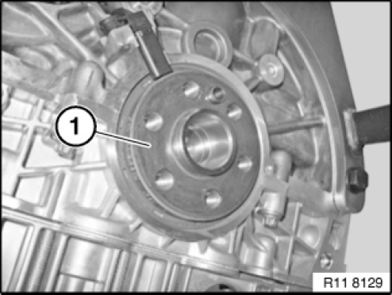
IMPORTANT:
Magnet wheel (1) is magnetic.
Keep magnet wheel (1) in a plastic bag away from swarf.
Remove magnet wheel (1) from crankshaft.
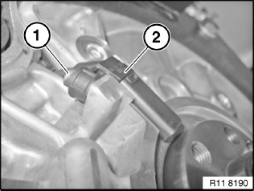
Release screw on pulse sensor (1).
Slide pulse sensor (2) upwards.
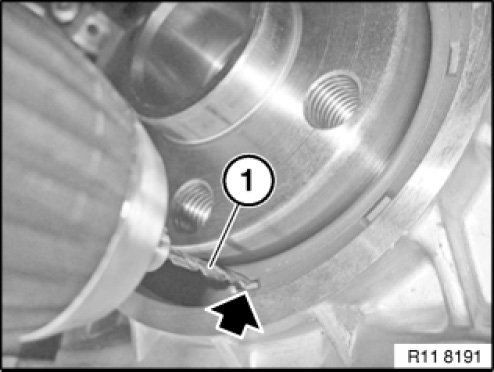
IMPORTANT:
Drill size maximum 2.5 millimeters.
Remove swarf immediately.
Drill a hole with a drill (1) in the radial shaft seal (see arrow).
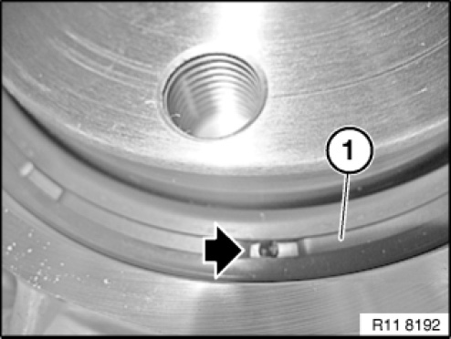
IMPORTANT: Immediately carefully remove swarf on the radial shaft seal (1).
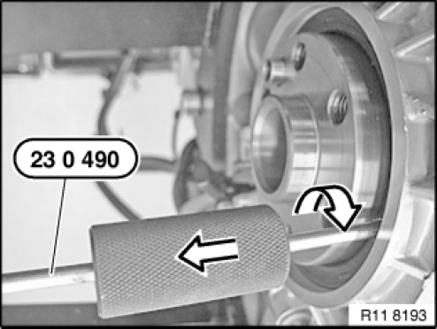
Screw in special tool 23 0 490 in direction of arrow.
Drive out radial shaft seal with impact weight in direction of arrow.
IMPORTANT: Immediately carefully remove residual swarf.
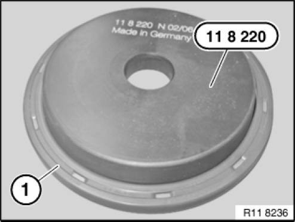
Prepare radial shaft seal (1) on special tool 11 8 220.
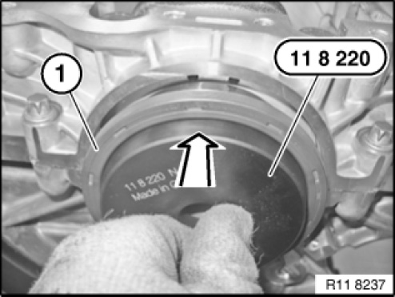
Position the radial shaft seal (1) with special tool 11 8 220 on the crankshaft.
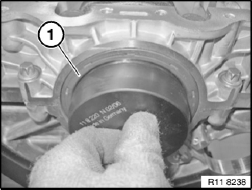
Brush radial shaft seal (1) over the special tool 11 8 220.
Move radial shaft seal (1) parallel up against the crankcase.
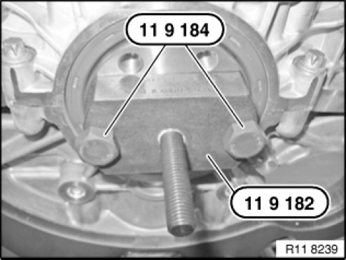
Fasten special tool 11 9 182 with special tool 11 9 184 on the crankshaft.
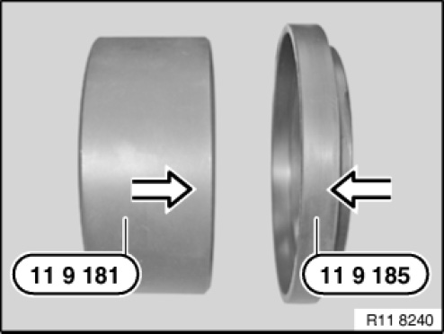
Installation note:
Prepare special tool 11 9 181 for installation.
Connect special tool 11 9 185 onto special tool 11 9 181.
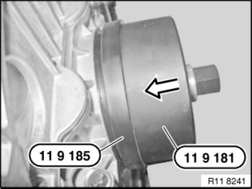
Pull on radial shaft seal with special tools 11 9 181 and 11 9 185 in combination with special tool 11 9 183.
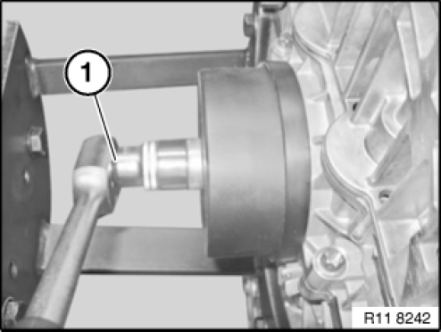
Screw on radial shaft seal with special tool 11 9 183 to limit position.

Remove all special tools.
Assemble engine.